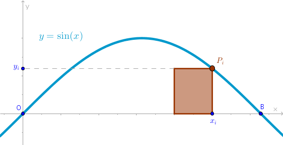
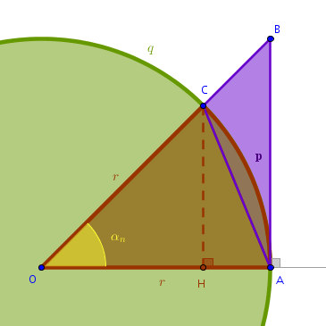

Problem
Find the square area of a plane region trapped under the single span of the graph of a sine function \(y = \sin(x)\) and the \(Ox\) axis in the first quadrant where \(x \in [0, \pi]\).
Right Sum Solution
Let us construct Right Riemann Sum for the graph of \(y = \sin(x)\) located in the first quadrant where \(x \in [0, \pi]\):
Let:
$$OB = \pi$$The square area of the \(i-\)th primitive rectangle is:
$$A'_{i, r} = \frac {\pi}{n} \times y_i =$$ $$\frac {\pi}{n} \sin(x_i) =$$ $$\frac {\pi}{n} \sin\Big(\frac{\pi}{n}i\Big)$$Right Riemann Sum is:
$$\begin{equation} A'_r = \frac {\pi}{n} \sum_{i=1}^n \sin\Big(\frac{\pi}{n}i\Big) \end{equation}$$A way to compute the sum in (1) in closed form is explained in Sums chapter of Rearrangement section under Basic Approaches (go Home, Basic Approaches, Rearrangement, Sums):
$$\sum_{i=1}^n \sin\Big(\frac{\pi}{n}i\Big)= \frac {\sin \frac {\pi(n + 1)}{2n} \sin \frac {\pi n}{2n}}{\sin \frac {\pi}{2n}}=$$ $$\begin{equation} \frac {\cos \frac {\pi}{2n}}{\sin \frac {\pi}{2n}} \end{equation}$$because:
$$\sin \frac {\pi n}{2n} = \sin \frac {\pi}{2} = 1$$ $$\sin \frac {\pi(n + 1)}{2n} = \sin\Big(\frac {\pi}{2} + \frac {\pi}{2n}\Big)= \cos \frac {\pi}{2n}$$Put (2) into (1):
$$A'_r = \frac {\pi}{n} \frac {\cos \frac {\pi}{2n}}{\sin \frac {\pi}{2n}} =$$ $$2 \times \frac {\pi}{2n} \frac {\cos \frac {\pi}{2n}}{\sin \frac {\pi}{2n}} =$$ $$2 \times \frac {\frac {\pi}{2n}}{\sin \frac {\pi}{2n}} \times \cos \frac {\pi}{2n}$$Apply the limit to \(A'_r\) when \(n \to +\infty\):
$$A_r = 2 \lim_{n \to +\infty} \frac {\frac {\pi}{2n}}{\sin \frac {\pi}{2n}} \times \cos \frac {\pi}{2n} =$$ $$2 \lim_{n \to +\infty} \frac {\frac {\pi}{2n}}{\sin \frac {\pi}{2n}} \times \lim_{n \to +\infty} \cos \frac {\pi}{2n} =$$ $$\begin{equation} 2 \lim_{n \to +\infty} \frac {\frac {\pi}{2n}}{\sin \frac {\pi}{2n}} \end{equation}$$because:
$$\lim_{n \to +\infty} \cos \frac {\pi}{2n} = 1$$since \(\cos(x)\) is a continuous function and its argument, in the above case, approaches zero without bound.
The important limit in (3) is traditionally studied in an inverse form:
$$\begin{equation} \lim_{n \to +\infty} \frac {\sin \frac {\pi}{2n}}{\frac {\pi}{2n}} \end{equation}$$Since \(n \to +\infty\) we can perform the following substitution:
$$\frac {\pi}{2n} = \alpha_n, \quad \alpha_n \to 0 \quad as \quad n \to +\infty$$and (4) becomes:
$$\begin{equation} \lim_{\alpha_n \to 0} \frac {\sin \alpha_n}{\alpha_n} \end{equation}$$which is frequently written in a continuous form:
$$\lim_{x \to 0} \frac {\sin(x)}{x}$$To compute (5) let us use the following construction where \(q\) is a circle with a center at \(O\) and a radius \(r\), \(\triangle OAC\) is an isosceles triangle contained within the circular sector \(OApC\) which is contained within the right triangle \(OAB\):
From Euclid's "Elements" Book \(3\) Proposition \(16\) it follows that the square areas of the above objects are sorted by size as follows:
$$A_{\triangle OAC} < A_{OApC} < A_{\triangle OAB}$$and then, measuring \(\alpha_n\) in radians:
$$\frac {OA \times CH}{2} < \frac {\alpha_n \times r^2}{2} < \frac {OA \times AB}{2}$$ $$r^2 \sin(\alpha_n) < \alpha_n \times r^2 < r^2 \tan(\alpha_n)$$ $$\begin{equation} \sin(\alpha_n) < \alpha_n < \tan(\alpha_n) \end{equation}$$Assuming that:
$$0 < \alpha_n < \frac {\pi}{2}$$divide (6) through by \(\sin(\alpha_n)\):
$$\begin{equation} 1 < \frac {\alpha_n}{\sin(\alpha_n)} < \frac {1}{\cos(\alpha_n)} \end{equation}$$Since \(\cos(x)\) is an even function and \(\sin(x)\) is an odd function, it follows that the reciprocal version of (7) is:
$$\begin{equation} 1 > \frac {\sin(\alpha_n)}{\alpha_n} > \cos(\alpha_n) \end{equation}$$Multiply (8) by \(-1\):
$$\begin{equation} -1 < - \frac {\sin(\alpha_n)}{\alpha_n} < - \cos(\alpha_n) \end{equation}$$Add \(1\) to all the inequalities in (9):
$$\begin{equation} 0 < 1 - \frac {\sin(\alpha_n)}{\alpha_n} < 1 - \cos(\alpha_n) \end{equation}$$but:
$$1 - \cos(\alpha_n) = 2 \sin^2 \frac{\alpha_n}{2} < 2 \sin \frac{\alpha_n}{2}$$and from (6) it follows that:
$$1 - \cos(\alpha_n) = 2 \sin^2 \frac{\alpha_n}{2} < 2 \sin \frac{\alpha_n}{2} < 2 \frac {\alpha_n}{2} = \alpha_n$$ $$\begin{equation} 1 - \cos(\alpha_n) < \alpha_n \end{equation}$$Put (11) into (10):
$$\begin{equation} 0 < 1 - \frac {\sin(\alpha_n)}{\alpha_n} < \alpha_n \end{equation}$$From (12) it follows that as long as \(\alpha_n \neq 0\) and \(\alpha_n < \frac{\pi}{2}\) then:
$$\begin{equation} \Bigg|\frac {\sin(\alpha_n)}{\alpha_n} - 1 \Bigg| < |\alpha_n| \end{equation}$$where (13) conforms to the definition of a limit: for an arbitrary \(\epsilon > 0\) we choose \(\delta\) as follows:
$$\delta = min( \epsilon, \frac {\pi}{2})$$and:
$$\Bigg|\frac {\sin(\alpha_n)}{\alpha_n} - 1 \Bigg| < |\alpha_n| = |\alpha_n - 0| < \delta$$ $$\alpha_n = \frac {\pi}{2n} < \delta \leqslant \epsilon$$ $$n > \frac {\pi}{2\epsilon}$$which means that in terms of \(n\):
$$\forall \epsilon > 0 \quad \exists N = \frac {\pi}{2\epsilon} : \quad \forall n > N \quad \Bigg|\frac {\sin(\alpha_n)}{\alpha_n} - 1 \Bigg| < \epsilon$$Consequently:
$$\begin{equation} \lim_{\alpha_n \to 0} \frac {\sin \alpha_n}{\alpha_n} = 1 \end{equation}$$Put (14) into (3) to obtain:
$$\bbox[#e8e8e8,3pt]{A_r = 2}$$As an exercise prove that the limit of the left Riemann sum \(A_l\) for this case exists and it is equal to \(A_r\) making the magnitude of the square area of the region in question equal to:
$$\bbox[#e8e8e8,3pt]{A = A_l = A_r = 2}$$\(\blacksquare\)